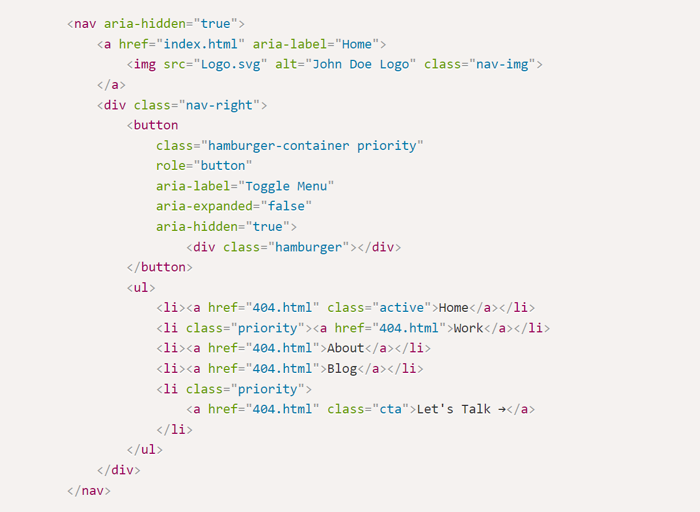

Background
Throughout my journey of designing and developing websites, I've encountered a recurring challenge: navigation menus. Creating a menu that is both visually appealing and user-friendly has proven to be quite a daunting task. I've come across countless beautifully designed navigation menus online, but sadly, their usability often left much to be desired. These experiences inspired me to take a closer look at one of my previous portfolio's navigation menus, determined to enhance it. To achieve this, I delved into extensive research, seeking out the best UX practices that would guide its transformation.
Mobile First Frenzy
A few years ago, I stumbled upon the concept of "mobile-first" design - crafting websites with mobile phones in mind. It made sense, especially when it came to coding websites. Starting with the bare essentials and then progressively adding more content using media queries seemed like a smart approach. However, I soon found myself juggling two different versions of the navigation menu for mobile and desktop. Unlike other page elements, transforming a horizontal navigation menu into a hamburger menu proved to be far from straightforward. In an attempt to streamline my workflow and save time, I made the decision to use hamburger menus exclusively for most of my projects. But little did I know, this choice came with its own set of drawbacks.
The Problem
So, here's the challenge: how can we leverage research-backed modifications to enhance the usability and conversions of the traditional hamburger menu commonly used on portfolio websites?
The Original
Unfortunately, the transition to hamburger menus brought forth several disadvantages that significantly affected the overall user experience:
-
Discoverability became a major concern, as the ambiguous hamburger icon often went unnoticed by users, making it difficult for them to find and access navigation options.
-
The lack of visibility and contextual awareness within the menu compounded the problem. Users struggled to understand where they were in the website's structure, leading to delays in finding the desired content.
-
On top of that, the interaction cost increased. Users had to perform an extra tap or click to access essential navigation options, which could be frustrating and time-consuming.
Clearly, a nav menu redesign based on accessibility and UX principles was necessary to ensure a functional, reliable, usable, and pleasurable experience for users.
Revamping the Hamburger Menu
To tackle the UX issues with the navigation menu, I embarked on a series of steps that would significantly improve its usability. Let's dive into each of these steps:
Simpler Navigation Titles
By using concise and scannable text, I could improve user scanning speed and reduce reaction time. According to the Nielsen Norman Group, this approach resulted in a remarkable 58% and 47% improvement in usability.
(Source: Nielsen Norman Group)

Visible Desktop Navigation
Here's an interesting finding: visible navigation menus outperformed hidden hamburger menus in terms of discoverability. Studies from the Nielsen Norman Group showed a significant 43% disparity in navigation usage between a hamburger menu and a visible navigation menu on desktop sites.
(Source: Nielsen Norman Group)
So, I decided to make the navigation menu visible, not only enhancing usability but also improving accessibility, saving precious time for users and even benefiting SEO.

Logo Integration
It turns out that prominently displaying the logo in the navigation menu is absolutely critical. Research by the Nielsen Norman Group found that placing the logo in the top left corner resulted in a staggering 89% higher brand recall compared to other placement locations.
(Source: Nielsen Norman Group)
Over the years, the logo has also taken on a secondary role as a link to the home page.

Adding the CTA
To drive user engagement and boost conversions, I strategically placed CTAs within the navigation menu. While the exact increase in conversions varied based on factors such as the website's target audience, industry, and design, studies have shown improvements ranging from 10% to 30% or more.

Adding Color
By adding color to the mix, I effectively highlighted important elements, making the logo and call-to-action stand out. Color is particularly effective at aiding scannability, ensuring that sighted users can easily distinguish and focus on these crucial elements.

Adding Active and Hover States
To enhance user understanding of component status, I incorporated visual signals for active and hover states. Clear visual cues communicate the current page and indicate the destination, making navigation more intuitive and reducing confusion. Without hover states, interactive portions may go unnoticed, resulting in missed content and disrupted conversion paths.

Adding a Subtle Drop Shadow
By creating the illusion of the navigation menu being "on top of" the page content, I improved its visibility and ensured clear differentiation from the rest of the page.

Moving Mobile Navigation to the Bottom
Recognizing user behavior, research revealed that most users navigate with a single thumb on their phones. So, I shifted the mobile navigation menu to the bottom. This change acknowledges the way users interact with their devices making sure they can easily reach the menu without straining. It might challenge established mental models, but I strongly believe the trade-off is well worth it.

Modifying the Mobile Navigation
When it came to the mobile navigation, I explored two approaches:
-
Version 1: I replaced the hamburger with icons and labels, creating a navigation style reminiscent of mobile apps. This approach maintains mental models and enhances discoverability, as many mobile apps use bottom navigation with labels. I also added active states to provide user feedback.

-
Version 2: In this version, I transformed the navigation into a combination of visible and hidden links. Studies have shown that combination menus outperform hamburgers by 1.5 times.
(Source: Nielsen Norman Group)
Visible links improve discoverability and support scalability for additional website pages. These modifications optimize user experience and navigation efficiency on mobile devices.

Development
To enhance accessibility, I implemented various modifications and adhered to best practices. Take a look at the modified website to see the improvements I made and discover the steps taken to enhance its accessibility.
Source Code Snippet

Here's a rundown of the key changes:
Proper Semantic Structure
I utilized semantic HTML elements such as nav, a, button,
ul, and li to provide a clear and meaningful structure for the navigation
menu, ensuring that it's well-organized and accessible.
Alternative Text for Images
To cater to screen readers, I added descriptive alternative text to the <img> element
using the alt attribute. This ensures that users who cannot view the images can still
understand their purpose.
ARIA Labels and Attributes
To assist users with disabilities, I included appropriate ARIA labels and attributes in the navigation
elements. For example, the logo's <a> element has an aria-label
attribute providing a descriptive label ("Home") for screen readers. The hamburger menu button includes
attributes such as aria-label, aria-expanded, and aria-hidden to
convey its purpose and state to assistive technologies.
Responsive Design
By implementing responsive design techniques, I ensured that the navigation menu adapts seamlessly to different screen sizes. On mobile devices, a compact and accessible hamburger menu is used, making it easier for users to navigate the website.
Keyboard Accessibility
I made the hamburger menu button (<button>) focusable and activatable using the
keyboard, guaranteeing that users who rely on keyboard navigation can easily access the menu
functionality.
Dynamic ARIA Label Updates
To provide accurate and up-to-date information to screen readers, I dynamically update the ARIA label of the navigation button when the menu is expanded or collapsed. This gives users real-time feedback on the current state of the navigation menu.
Proper Focus Management
When the navigation menu is opened, I ensure that the focus is automatically shifted to the first menu item, allowing keyboard users to continue navigating the menu without any interruption.
Conclusion
In conclusion, by challenging the limitations of the traditional hamburger menu and incorporating research-backed modifications, I transformed a clunky and hidden navigation into an engaging and accessible experience. After all the modifications, I am still left with a few next steps and questions.
Next Steps
To further assess the impact of these modifications, I plan to conduct a multivariate test comparing the original and final versions. This test will help determine whether the combined changes amplify the benefits or potentially negate each other. Additionally, there are several questions that require deeper investigation:
Further Questions
-
Does the mobile navigation menu perform better when at the top or bottom of the page?
-
Does a mobile navigation perform better if it includes icons and labels or a combination of links and a hamburger menu?
-
What would be the best way to incorporate a search bar into the menu?
-
How can we improve the experience when dropdown menus are used?